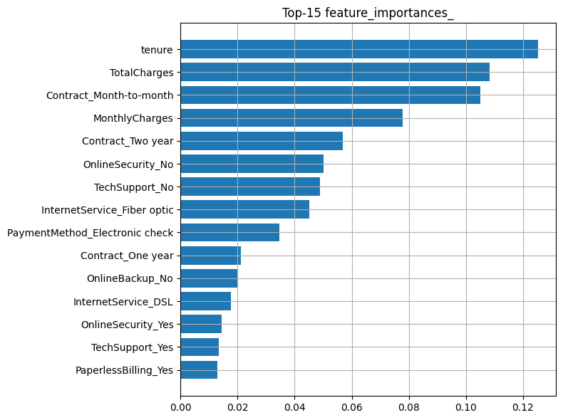
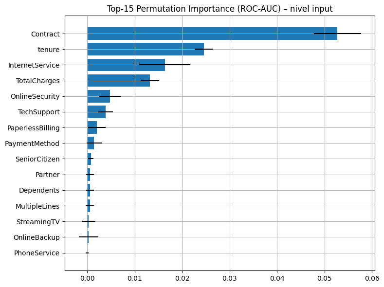
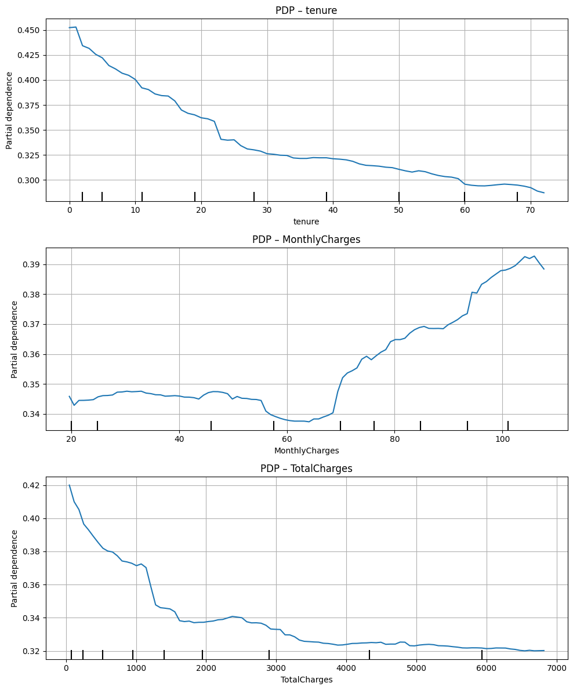
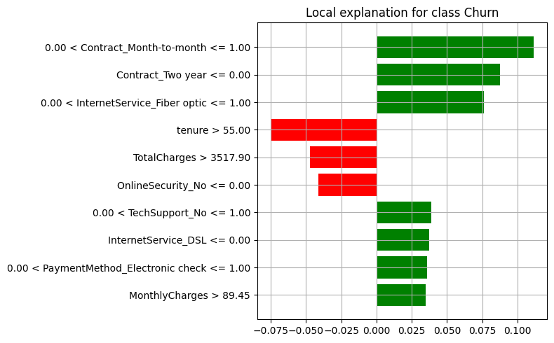

6. Interpretabilidad#
from pathlib import Path
import joblib
# Detecta automáticamente la carpeta 'models' subiendo niveles si es necesario
candidates = [
Path("models"),
Path("../models"),
Path("../../models"),
]
MODELS = None
for p in candidates:
if p.exists() and p.is_dir():
MODELS = p.resolve()
break
if MODELS is None:
raise FileNotFoundError("No encontré la carpeta 'models' en: " +
", ".join(str(p) for p in candidates))
print("Usando carpeta models:", MODELS)
# Carga de artefactos
model_path = MODELS / "xgb_best.joblib"
prep_path = MODELS / "preprocessor.joblib"
print("Model path:", model_path)
print("Preprocessor path:", prep_path)
model = joblib.load(model_path)
preprocessor = joblib.load(prep_path)
print("✓ Artefactos cargados.")
Usando carpeta models: C:\Users\juana\MLOPS\miniproyecto6\models
Model path: C:\Users\juana\MLOPS\miniproyecto6\models\xgb_best.joblib
Preprocessor path: C:\Users\juana\MLOPS\miniproyecto6\models\preprocessor.joblib
✓ Artefactos cargados.
from sklearn.pipeline import Pipeline
# --- Detectar si el modelo es un Pipeline y extraer el clasificador final ---
is_pipeline = isinstance(model, Pipeline)
clf = model[-1] if is_pipeline else model # último step del pipeline o el modelo directo
# -------------------------------------------------------------------
# 5) Métricas rápidas para comprobar consistencia (según sea pipeline o no)
# -------------------------------------------------------------------
if hasattr(model, "predict_proba"):
if is_pipeline:
# El pipeline ya contiene el preprocessor, pásale X crudo (columnas originales)
y_prob = model.predict_proba(X_test)[:, 1]
else:
# Modelo "puro": pásale las features ya transformadas
y_prob = model.predict_proba(X_test_transformed)[:, 1]
y_pred = (y_prob >= 0.5).astype(int)
else:
if is_pipeline:
y_pred = model.predict(X_test)
else:
y_pred = clf.predict(X_test_transformed)
y_prob = None
try:
from sklearn.metrics import classification_report, roc_auc_score
print("\n== Métricas en TEST ==\n")
print(classification_report(y_test_raw, y_pred, digits=3))
if y_prob is not None:
print(f"ROC-AUC: {roc_auc_score(y_test_raw, y_prob):.4f}")
except Exception as e:
print("Aviso al calcular métricas:", e)
# -------------------------------------------------------------------
# 6) Inicializar LIME sobre el ESPACIO DEL MODELO (numérico)
# - Entrenamos LIME con X_test_transformed (numérico)
# - Usamos predict_fn del CLASIFICADOR FINAL (no del pipeline completo)
# -------------------------------------------------------------------
from lime.lime_tabular import LimeTabularExplainer
explainer = LimeTabularExplainer(
training_data=np.array(X_test_transformed),
feature_names=feature_names,
class_names=["No_Churn", "Churn"],
mode="classification",
discretize_continuous=True
)
def predict_proba_fn(x):
# x llega en espacio transformado -> usar SIEMPRE el clasificador final
return clf.predict_proba(x)
# Sanity check de clases del clasificador final
print("clf.classes_:", getattr(clf, "classes_", "N/A"))
try:
pos_idx = int(np.where(clf.classes_ == 1)[0][0]) # índice de la clase '1'
except Exception:
pos_idx = 1 # fallback
print("índice clase Churn=1 en predict_proba:", pos_idx)
def predict_proba_fn(x):
# asegurar float y shape (n,2)
proba = clf.predict_proba(x)
return np.asarray(proba, dtype=float)
# Pide 2 etiquetas a LIME y selecciona una segura al graficar
indices = [0, len(X_test_transformed)//2, len(X_test_transformed)-1]
for idx in indices:
exp = explainer.explain_instance(
data_row=X_test_transformed[idx],
predict_fn=predict_proba_fn,
num_features=10,
top_labels=2 # <- importante: pedir ambas
)
# intenta graficar la clase 1; si no existe, usa la disponible
labels_avail = exp.available_labels()
label_to_use = 1 if 1 in labels_avail else labels_avail[0]
fig = exp.as_pyplot_figure(label=label_to_use)
fig.suptitle(f"LIME – idx {idx} (label {label_to_use})", fontsize=12)
out_file = FIG_OUT / f"lime_idx_{idx}_label{label_to_use}.png"
plt.tight_layout()
plt.savefig(out_file, dpi=120, bbox_inches="tight")
plt.show()
print(f"✓ LIME guardado en: {out_file}")
== Métricas en TEST ==
precision recall f1-score support
0 0.887 0.786 0.834 1035
1 0.550 0.722 0.624 374
accuracy 0.769 1409
macro avg 0.718 0.754 0.729 1409
weighted avg 0.797 0.769 0.778 1409
ROC-AUC: 0.8397
clf.classes_: [0 1]
índice clase Churn=1 en predict_proba: 1
✓ LIME guardado en: c:\Users\juana\MLOPS\miniproyecto6\docs\assets\figuras\lime_idx_0_label1.png
✓ LIME guardado en: c:\Users\juana\MLOPS\miniproyecto6\docs\assets\figuras\lime_idx_704_label1.png
✓ LIME guardado en: c:\Users\juana\MLOPS\miniproyecto6\docs\assets\figuras\lime_idx_1408_label1.png
import pandas as pd
import numpy as np
import matplotlib.pyplot as plt
from pathlib import Path
FIG_OUT = Path("docs/assets/figuras"); FIG_OUT.mkdir(parents=True, exist_ok=True)
# Nombres de features post-preprocesamiento
feat_names = preprocessor.get_feature_names_out()
# Soporta RF/XGB/LGBM (modelos con atributo feature_importances_)
imp = getattr(clf, "feature_importances_", None)
if imp is not None:
imp_df = (pd.DataFrame({"feature": feat_names, "importance": imp})
.sort_values("importance", ascending=False)
.head(15))
plt.figure(figsize=(8,6))
plt.barh(imp_df["feature"][::-1], imp_df["importance"][::-1])
plt.title("Top-15 feature_importances_")
plt.tight_layout()
out = FIG_OUT/"imp_feature_importances_top15.png"
plt.savefig(out, dpi=120, bbox_inches="tight"); plt.show()
print("✓ Guardado:", out)
else:
print("El modelo no expone feature_importances_. (Omite esta celda o usa Permutation Importance)")

✓ Guardado: docs\assets\figuras\imp_feature_importances_top15.png
from sklearn.pipeline import Pipeline
from sklearn.inspection import permutation_importance
import pandas as pd
import matplotlib.pyplot as plt
from pathlib import Path
FIG_OUT = Path("docs/assets/figuras"); FIG_OUT.mkdir(parents=True, exist_ok=True)
pipe = Pipeline([("pre", preprocessor), ("clf", clf)])
res = permutation_importance(
pipe, # pipeline completo
X_test, y_test, # columnas crudas
n_repeats=10,
random_state=42,
scoring="roc_auc",
n_jobs=-1
)
# >>> NOMBRES CORRECTOS: columnas crudas (no las transformadas)
feat_names_in = X_test.columns.to_list()
# Sanity check para evitar mismatches
assert len(feat_names_in) == len(res.importances_mean), \
f"len(names)={len(feat_names_in)} vs len(imp)={len(res.importances_mean)}"
perm_df = (
pd.DataFrame({
"feature": feat_names_in,
"mean_importance": res.importances_mean,
"std_importance": res.importances_std
})
.sort_values("mean_importance", ascending=False)
.head(15)
)
plt.figure(figsize=(8,6))
plt.barh(perm_df["feature"][::-1], perm_df["mean_importance"][::-1],
xerr=perm_df["std_importance"][::-1])
plt.title("Top-15 Permutation Importance (ROC-AUC) – nivel input")
plt.tight_layout()
out = FIG_OUT / "imp_permutation_input_top15.png"
plt.savefig(out, dpi=120, bbox_inches="tight"); plt.show()
print("✓ Guardado:", out)

✓ Guardado: docs\assets\figuras\imp_permutation_input_top15.png
from sklearn.inspection import PartialDependenceDisplay as PDP
pipe = Pipeline([("pre", preprocessor), ("clf", clf)])
features_pdp = []
for col in ["tenure", "MonthlyCharges", "TotalCharges"]:
if col in X_test.columns:
features_pdp.append(col)
if features_pdp:
fig = plt.figure(figsize=(10, 4*len(features_pdp)))
for i, col in enumerate(features_pdp, 1):
ax = plt.subplot(len(features_pdp), 1, i)
PDP.from_estimator(pipe, X_test, [col], ax=ax, kind="average")
ax.set_title(f"PDP – {col}")
plt.tight_layout()
out = FIG_OUT/"pdp_selected.png"
plt.savefig(out, dpi=120, bbox_inches="tight"); plt.show()
print("✓ Guardado:", out)
else:
print("No se encontraron las columnas numéricas sugeridas para PDP.")

✓ Guardado: docs\assets\figuras\pdp_selected.png
import shap, numpy as np
# Muestra para velocidad
idx = np.random.RandomState(42).choice(len(X_test), size=min(1000, len(X_test)), replace=False)
X_sample = X_test.iloc[idx]
pipe = Pipeline([("pre", preprocessor), ("clf", clf)])
X_sample_tr = pipe.named_steps["pre"].transform(X_sample)
feat_names = pipe.named_steps["pre"].get_feature_names_out()
try:
explainer = shap.TreeExplainer(clf)
shap_values = explainer.shap_values(X_sample_tr)
plt.figure(figsize=(8,6))
try:
shap.summary_plot(shap_values, features=X_sample_tr, feature_names=feat_names, show=False)
except Exception:
# Si devuelve lista por clase, toma la positiva (1) si existe
shap.summary_plot(shap_values[1] if isinstance(shap_values, list) else shap_values,
features=X_sample_tr, feature_names=feat_names, show=False)
out = FIG_OUT/"shap_beeswarm.png"
plt.savefig(out, dpi=120, bbox_inches="tight"); plt.show()
print("✓ Guardado:", out)
except Exception as e:
print("SHAP TreeExplainer no disponible para este estimador:", e)
<Figure size 800x600 with 0 Axes>
✓ Guardado: docs\assets\figuras\shap_beeswarm.png
from lime.lime_tabular import LimeTabularExplainer
# nombres y datos transformados
feature_names = preprocessor.get_feature_names_out()
X_test_transformed = preprocessor.transform(X_test)
# ¡explainer de LIME, no SHAP!
lime_explainer = LimeTabularExplainer(
training_data=X_test_transformed,
feature_names=feature_names,
class_names=["No_Churn", "Churn"],
mode="classification",
discretize_continuous=True
)
# función de predicción
def predict_proba_fn(x):
return clf.predict_proba(x)
idx = 10 # ejemplo
exp_row = lime_explainer.explain_instance(
X_test_transformed[idx],
predict_proba_fn,
num_features=10,
top_labels=2
)
# visualizar / guardar figura
import matplotlib.pyplot as plt
fig = exp_row.as_pyplot_figure(label=1) # clase positiva
plt.tight_layout()
plt.show()
